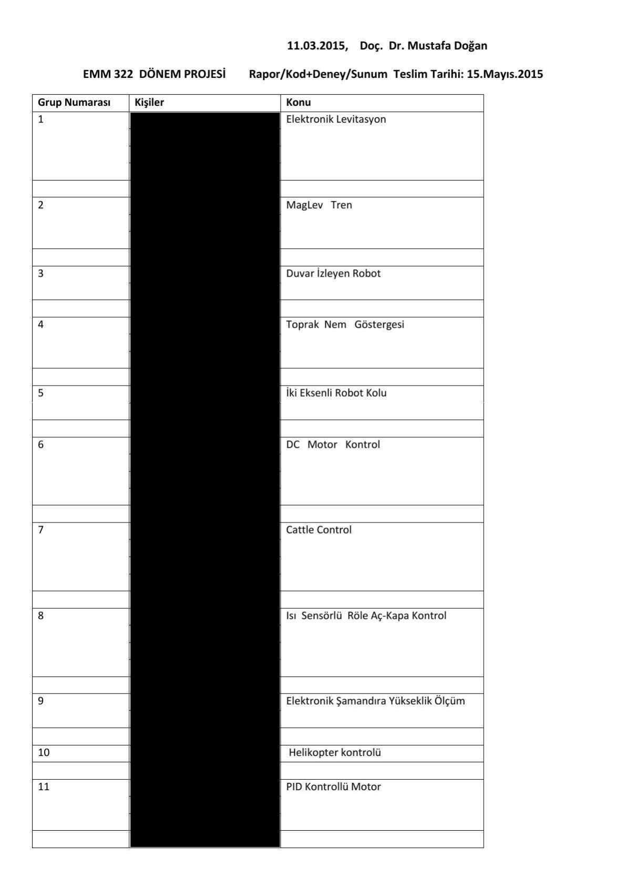

· EEM322
EEM322 Denetim Sistemleri: 2015 Dönem Projesi Konuları ve Örnek Rapor İçeriği
EEM322 – Denetim Sistemleri · 11.03.2015 · 16.10.2026
Bu yazı, Başkent Üniversitesi EEM322 Denetim Sistemleri dersinin 2015 bahar dönemi dönem projesi duyurusudur. Belgeyi dersi veren Doç. Dr. Mustafa Doğan 11.03.2015 tarihinde hazırlamış; belgede ders kodu "EMM 322" olarak geçiyor. İki sayfalık duyuruda proje gruplarının konuları ve proje raporunda bulunması beklenen bölümler var. Grup listesindeki öğrenci adları kaldırıldı; maskelenmiş PDF yazının sonunda indirilebilir.
Rapor/Kod+Deney/Sunum teslim tarihi: 15 Mayıs 2015.
Proje grupları ve konuları
Gruplar iki ila dört kişiden oluşuyordu; birkaç proje tek kişilikti. Her grup kendi seçtiği bir denetim problemini modelleyip benzetimini yapacak, mümkünse deneyle gösterecekti.
| Grup | Konu |
|---|---|
| 1 | Elektronik Levitasyon |
| 2 | MagLev Tren |
| 3 | Duvar İzleyen Robot |
| 4 | Toprak Nem Göstergesi |
| 5 | İki Eksenli Robot Kolu |
| 6 | DC Motor Kontrol |
| 7 | Cattle Control (su ısıtıcısı / kettle kontrolü) |
| 8 | Isı Sensörlü Röle Aç-Kapa Kontrol |
| 9 | Elektronik Şamandıra Yükseklik Ölçüm |
| 10 | Helikopter Kontrolü |
| 11 | PID Kontrollü Motor |
| 12 | Sensor Design |
| 13 | Servo Motor Öteleme Hareket Kontrolü |
| 14 | Asenkron Motor Kontrolü, LCD |
| 15 | Sıcaklık Kontrolü |
| 16 | Motor Kontrol Güneş Sistemi |
| 17 | Dinamo ile Yazı Yazma |
Not: 7. grubun konusu belgede "Cattle Control" diye yazılmış; kastedilen büyük olasılıkla "kettle" (su ısıtıcısı) kontrolüdür.

Örnek rapor içeriği
Duyurunun ikinci sayfasında proje raporunun içindekiler bölümü için bir şablon verilmiş:
- Giriş (problem tanımı, tasarım kriterleri, zorluk derecesi)
- Bilgilendirme / Teşekkürler
- Semboller ve kısaltmalar
- Sistem modelleme
- Model doğrulama / karşılaştırma
- Belirsizlik ve bozan etken çözümlemesi
- Benzetim sonuçları (MATLAB / Simulink / SimMechanics): çıktılar, yorumlar
- Tartışma ve sonuçlar
- Ekler: açıklamalı MATLAB dosyaları
Şablonda Giriş, Model doğrulama/karşılaştırma, Belirsizlik ve bozan etken çözümlemesi ve Tartışma ve sonuçlar bölümleri büyük ve altı çizili yazılarak öne çıkarılmış.
Rapor haricinde yapılacak olan programlar MATLAB dosyası olarak sunum günü çalıştırılıp test edilecektir, içerikleri her satırı açıklamalı olarak rapora eklenecektir.